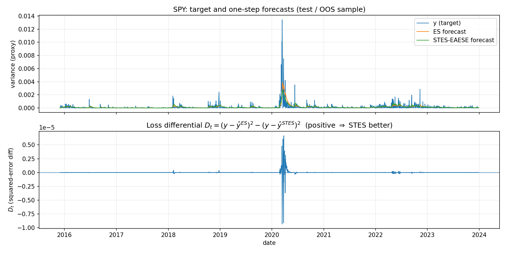
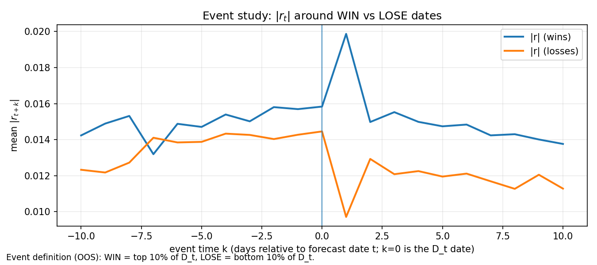
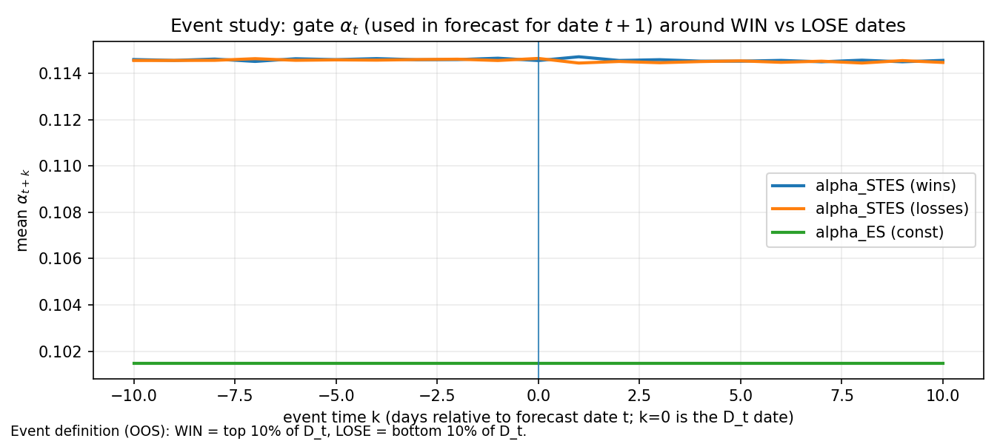
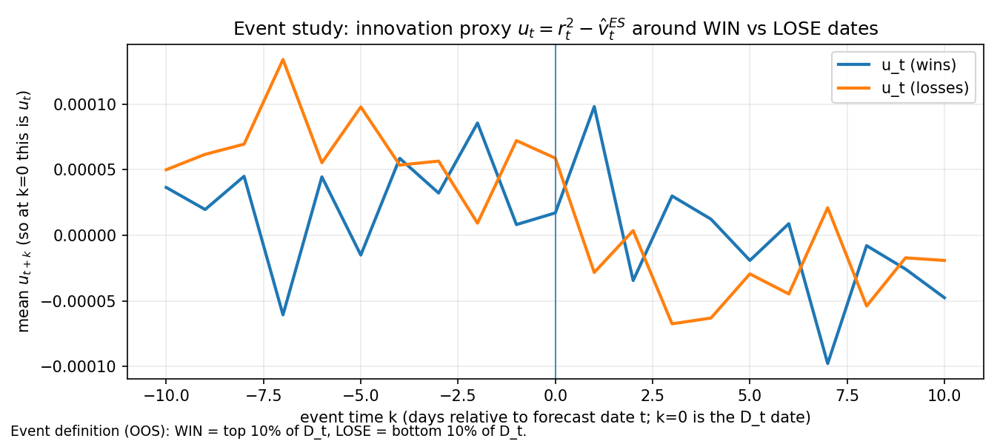
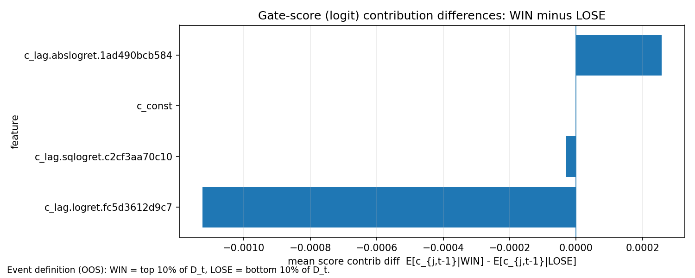

Volatility Forecasts (Part 1 - STES Model)
Updates
20260113: This post is updated with more mathematical analysis
(The code for this post can be found in the Github repository.)
Table of Contents
Introduction
Exponential smoothing (ES) is a simple yet widely used approach to volatility forecasting in finance and economics. It is formulated as
\[ \begin{equation}\label{eq:expsmooth} \widehat{\sigma}_t^2 = \alpha r_{t-1}^2 + (1-\alpha)\widehat{\sigma}_{t-1}^2 \end{equation} \]
where \[\widehat{\sigma}_t\] denotes the estimated volatility at time \[t\] and \[r_t\] is the asset log return at time \[t\]. The recursion defines \[\widehat{\sigma}_t^2\] as a weighted average of the most recent squared log return and the previous volatility estimate. In this post, we will often refer \[\alpha\] as gate or learning rate that controls how much new information is incorporated into our next period variance forecasts.
Unrolling the recursion yields
\[ \begin{equation}\label{eq:expsmooth_unrolled} \begin{aligned} \widehat{\sigma}_t^2 &= \alpha r_{t-1}^2 + (1-\alpha)\widehat{\sigma}_{t-1}^2 \\ &= \alpha r_{t-1}^2 + \alpha(1-\alpha)r_{t-2}^2 + (1-\alpha)^2\widehat{\sigma}_{t-2}^2 \\ &= \alpha r_{t-1}^2 + \alpha(1-\alpha)r_{t-2}^2 + \alpha(1-\alpha)^2r_{t-3}^2 + \dots \\ \end{aligned} \end{equation} \]
We see that ES is an exponential-weighted moving average (EWMA) of past squared log returns \[r_t^2\]. EWMA itself is a popular linear filter used across many fields; in finance, it appears in a range of applications beyond volatility forecasting.
If a process is generated by ARIMA(0,1,1), then EWMA is the one-step-ahead optimal linear forecast. An ARIMA(0,1,1) is a random walk with a moving-average innovation, and the implied recursion for the conditional mean takes exactly the EWMA form.
More concretely, let \[y_t\] follow ARIMA(0,1,1):
\[ \Delta y_t = y_t - y_{t-1} = \varepsilon_t + \theta \varepsilon_{t-1}, \qquad \varepsilon_t \sim \text{i.i.d. } (0,\sigma_\varepsilon^2) \]
and let \[\mathcal{F}_t\] denote the information set up to time \[t\]. Since \[\mathbb{E}[\varepsilon_{t+1}\mid \mathcal{F}_t]=0\], the one-step-ahead conditional expectation is
\[ \mathbb{E}[y_{t+1}\mid \mathcal{F}_t] = y_t + \mathbb{E}[\Delta y_{t+1}\mid \mathcal{F}_t] = y_t + \theta \varepsilon_t \]
Define the one-step forecast \[\widehat{y}_{t+1 \mid t} = \mathbb{E}[y_{t+1}\mid \mathcal{F}_t]\]. The forecast error is
\[ e_t = y_t - \widehat{y}_{t \mid t-1} \]
Under the model, the innovations coincide with forecast errors, i.e. \[\varepsilon_t = e_t\]. Substituting this into the forecasting formula gives
\[ \widehat{y}_{t+1 \mid t} = y_t + \theta e_t = y_t + \theta\left(y_t - \widehat{y}_{t \mid t-1}\right) = (1+\theta)y_t - \theta \widehat{y}_{t \mid t-1} \]
Rearranging we get
\[ \widehat{y}_{t+1 \mid t} = \alpha y_t + (1-\alpha)\widehat{y}_{t \mid t-1}, \qquad \alpha = 1+\theta \]
This is exactly the exponential smoothing recursion where the next forecast is a convex combination of the latest observation and the previous forecast. For the usual invertibility condition of MA(1) (which requires \[\lvert \theta \rvert<1\]), we have \[\alpha \in (0,2)\]; in many practical applications (including classical exponential smoothing), one restricts to \[\alpha\in(0,1)\], which corresponds to \[\theta\in(-1,0)\]. ARIMA(0,1,1) implies an EWMA forecasting rule, and under correct specification, that rule is one-step-ahead optimal because it is the conditional expectation under the data-generating model.
Smooth Transition Exponential Smoothing
Taylor (2004) introduces the Smooth Transition Exponential Smoothing (STES). It is motivated by an empirical regularity: past return shocks can have an asymmetric relationship with future realized volatility. A natural implication is that the effective update rate in an EWMA filter should vary with the characteristics of recent shocks rather than remain constant.
STES modifies ES by allowing the smoothing parameter to respond to a set of transition variables. Specifically, it is formulated as
\[ \begin{equation}\label{eq:stexpsmooth} \begin{aligned} \widehat{\sigma}_t^2 &= \alpha_{t-1} r_{t-1}^2 + (1-\alpha_{t-1})\widehat{\sigma}_{t-1}^2 \\ \alpha_{t-1} &= \mathrm{sigmoid}\left(-X_{t-1}^\top \beta\right) \\ \end{aligned} \end{equation} \]
Note on sign convention: the authors write \[\alpha_t = \frac{1}{1+\exp\left(X_t \beta\right)}\]. This is mathematically equivalent to writing \[\alpha_t = \frac{1}{1+\exp\left(-X_t \tilde\beta\right)}\] after the re-parameterization \[\tilde\beta = -\beta\]. In code and in this series we use the sigmoid form (which is implemented using the scipy’s
expitfunction) that is monotone increasing in its argument.
In contrast to ES, \[\alpha_t\] is no longer constant. It is determined by the transition variables \[X_t\], which may include a constant term and functions of recent returns such as \[\lvert r_t \rvert\] or \[r_t^2\] (to capture shock magnitude), as well as \[r_t\] itself (to allow for sign effects, often discussed under “leverage” or asymmetry). By conditioning the update rate on these variables, STES retains the interpretability and computational simplicity of EWMA while permitting the \[\alpha_t\] to adapt across market conditions.
Taylor (2004) reports that STES performs competitively against ES and benchmark GARCH-type models in terms of one-step-ahead forecasting accuracy for major equity indices. A later study, Liu, Taylor, and Choo (2020), extends the framework to investigate whether trading volume adds incremental predictive value for realized volatility and to assess the robustness of STES to outliers.
A time-varying update rate can be beneficial in theory and in practice. If the volatility process behaves as if it has different effective persistence in different regions of the state space—e.g., calm periods with slow-moving variance and crisis periods with sharp variance re-pricing—then any constant-\[\alpha\] filter is forced to compromise. It will either react too slowly in stressed regimes or too quickly in calm regimes. STES addresses this mismatch in the most conservative way possible: it retains the stable EWMA recursion but lets the learning rate \[\alpha_t\] be a smooth function of observable state variables. In that sense, STES can be interpreted as a low-dimensional, regime-adaptive approximation to richer conditional variance dynamics.
From a modeling perspective, STES remains deliberately restrictive. Rather than forecasting volatility level directly with a rich parametric dynamics, it focuses on estimating the time-varying smoothing parameter \[\alpha_t\] that governs how quickly the volatility estimate incorporates new information.
Roadmap for this series
In this Volatility Forecasts series, we will explore extensions of the STES idea. In Part 2 and Part 3, we replace the linear transition function in STES with a tree-ensemble model.
Results
Preprocessing
All results use standardized inputs: features (excluding the constant term) are normalized using StandardScaler fit on the training split, then applied identically to both training and test splits.
STES vs ES on simulated returns
We begin by replicating a subset of results from Liu et al. (2020) using data and simulation procedures available to us. The authors compare (among other models) ES and several STES variants by estimating parameters on a training window and evaluating out-of-sample metrics such as RMSE, MAE, and MedAE (median absolute error). They first conduct a controlled experiment on simulated GARCH returns contaminated by extreme outliers, and report that STES can outperform ES in terms of MAE and MedAE, and handle outliers more effectively. As we will see below, STES perform only similarly to ES in terms of RMSE.
Table 1 reports our RMSE results alongside those from Liu et al. (2020). Although we do not reproduce their numbers exactly, the overall pattern is similar: the models are close, and the STES variants differ only marginally from ES. We follow the naming convention used by the authors: STES-AE uses absolute return (AE) as the transition variable; STES-E&AE&SE uses returns (E), absolute returns (AE), and squared returns (SE) jointly.
| Model | RMSE (standardized) |
(Liu et al 2020) |
|---|---|---|
ES |
2.66e-04 | 2.45e-04 |
STES-AE |
2.65e-04 | 2.43e-04 |
STES-SE |
2.66e-04 | 2.44e-04 |
STES-E&AE |
2.65e-04 | |
STES-E&SE |
2.66e-04 | |
STES-AE&SE |
2.66e-04 | |
STES-E&AE&SE |
2.67e-04 |
[Table 1: Comparison of the STES and ES models on simulated data (\[\eta = 4\]). Standardized inputs using StandardScaler on training features; reflects 100 Monte Carlo runs.]
Table 1 shows that STES barely improves upon ES on simulated GARCH paths in terms of RMSE. One might presume that STES can outperform ES on GARCH given that it is a conditional variance model and STES is adapting the variance filter through a time-varying learning rate. That intuition is misleading: under a vanilla GARCH data-generating process, there is essentially no signal for a time-varying update rate to exploit, and therefore STES cannot systematically reduce expected one-step-ahead RMSE relative to ES.
We first show that the MSE-optimal forecast is the conditional expectation. Let \[Y_t\] be the object we are trying to predict at time \[t-1\] (in our experiments, \[Y_t = r_t^2\]). Among all \[\mathcal{F}_{t-1}\]-measurable predictors \[f_{t-1}\], the predictor that minimizes one-step mean squared error satisfies
\[ f_{t-1}^* = \arg\min_{f_{t-1}\in \mathcal{F}_{t-1}} \mathbb{E}\left[(Y_t - f_{t-1})^2\right] \quad \Longrightarrow \quad f_{t-1}^* = \mathbb{E}\left[Y_t \mid \mathcal{F}_{t-1}\right] \]
For any \[f_{t-1}\],
\[ \mathbb{E}\left[(Y_t - f_{t-1})^2\right] = \mathbb{E}\left[(Y_t - f_{t-1}^* + f_{t-1}^* - f_{t-1})^2\right] = \mathbb{E}\left[(Y_t - f_{t-1}^*)^2\right] + \mathbb{E}\left[(f_{t-1}^* - f_{t-1})^2\right] \]
where the cross term vanishes because \[Y_t - f_{t-1}^*\] is orthogonal to all \[\mathcal{F}_{t-1}\]-measurable random variables. The second term is nonnegative, hence the minimum is achieved uniquely at \[f_{t-1}^*\].
Consider the standard GARCH(1,1) return model (which is used in the simulation study)
\[ r_t = \sigma_t z_t, \qquad \mathbb{E}[z_t]=0,\quad \mathbb{E}[z_t^2]=1,\quad z_t \perp \mathcal{F}_{t-1} \]
with conditional variance recursion
\[ \sigma_t^2 = \omega + \alpha r_{t-1}^2 + \beta \sigma_{t-1}^2, \qquad \omega>0,\ \alpha\ge 0,\ \beta\ge 0 \]
Then the conditional expectation of next-day squared return is
\[ \mathbb{E}\left[r_t^2\mid \mathcal{F}_{t-1}\right] = \mathbb{E}\left[\sigma_t^2 z_t^2 \mid \mathcal{F}_{t-1}\right] = \sigma_t^2 \mathbb{E}\left[z_t^2\right] = \sigma_t^2 \]
The ES recursion is
\[ \widehat{\sigma}_t^2 = \alpha_{\mathrm{ES}} r_{t-1}^2 + (1-\alpha_{\mathrm{ES}})\widehat{\sigma}_{t-1}^2 \]
A GARCH recursion can be rewritten to highlight its EWMA structure:
\[ \sigma_t^2 = \omega + \alpha r_{t-1}^2 + \beta \sigma_{t-1}^2 = \omega + (\alpha+\beta)\left( \underbrace{\frac{\alpha}{\alpha+\beta}}_{=: \alpha_{\mathrm{eff}}} r_{t-1}^2 + \underbrace{\frac{\beta}{\alpha+\beta}}_{=1-\alpha_{\mathrm{eff}}}\sigma_{t-1}^2 \right) \]
So GARCH is “intercept + persistence × EWMA”. When \[\alpha+\beta\] is close to 1 and \[\omega\] is small relative to the prevailing variance level, the conditional variance behaves very similarly to a constant-\[\alpha\] EWMA with
\[ \alpha_{\mathrm{eff}} = \frac{\alpha}{\alpha+\beta} \]
In our simulation setup (which is the same as what is used in Liu et al 2020), \[\alpha=0.11\] and \[\beta=0.87\], hence \[\alpha+\beta=0.98\] and \[\alpha_{\mathrm{eff}}\approx 0.112\]. This already explains why ES is a strong baseline: it is very close to the true one-step conditional variance mapping, leaving limited headroom for further improvements in RMSE.
In vanilaa GARCH(1,1), the coefficient on \[r_{t-1}^2\] in the conditional variance recursion is a constant. There is no mechanism in the DGP that says “use a different update rate after a large shock” or “use a different update rate after a negative return.” In fact, under symmetry and i.i.d. innovations, the sign of \[r_{t-1}\] contains no information for \[\sigma_t^2\] beyond \[r_{t-1}^2\]. The optimal solution within the STES family is to set \[X_t\beta\] to be (approximately) constant, so that \[\alpha_t\] becomes (approximately) constant. In other words:
If the true DGP implies an approximately constant optimal update rate, the best
STESreduces toES.
There is also an irreducible noise floor in this evaluation protocol. Even an oracle predictor that knows the true conditional variance cannot predict the realized innovation \[z_t^2\]. Writing
\[ r_t^2 = \sigma_t^2 z_t^2 \]
we have
\[ r_t^2 - \sigma_t^2 = \sigma_t^2(z_t^2 - 1) \]
so the minimum achievable one-step MSE is
\[ \mathbb{E}\left[\left(r_t^2 - \mathbb{E}[r_t^2\mid \mathcal{F}_{t-1}]\right)^2\right] = \mathbb{E}\left[\mathrm{Var}(r_t^2\mid \mathcal{F}_{t-1})\right] = \mathbb{E}[\sigma_t^4]\cdot \mathrm{Var}(z_t^2) \]
With heavy-tailed innovations (as in the Student-\[t\] setting), \[\mathrm{Var}(z_t^2)\] can be large, and this irreducible component dominates the RMSE. As a result, even meaningful improvements in forecasting \[\sigma_t^2\] may translate into small changes in RMSE measured against \[r_t^2\].
On our simulated GARCH paths, it is not surprising that STES fails to materially beat ES in RMSE. Under that DGP, the optimal one-step forecast is the GARCH conditional variance itself; ES already approximates it well when persistence is high; and the additional flexibility of a time-varying gate has no stable signal to exploit and can only fit noise.
STES vs ES on SPY returns
On real equity-index data, STES has more opportunity to add value because the transition variables can capture state dependence that a constant \[\alpha\] cannot. Table 2 reports out-of-sample RMSE for ES and several STES variants when forecasting SPY realized variance. Across specifications, STES improvements over ES in terms of RMSE are more significant, with the best-performing variant in this run being STES-E&AE&SE.
| Model | Test RMSE |
Train RMSE |
|---|---|---|
ES |
4.64e-04 | 5.06e-04 |
STES-AE |
4.54e-04 | 5.03e-04 |
STES-SE |
4.52e-04 | 5.02e-04 |
STES-E&AE |
4.52e-04 | 5.01e-04 |
STES-E&SE |
4.50e-04 | 4.99e-04 |
STES-AE&SE |
4.49e-04 | 5.02e-04 |
STES-E&AE&SE |
4.49e-04 | 5.00e-04 |
[Table 2: Comparison of the STES and ES models on SPY returns with standardized inputs. Standardized features (all except constant term) using StandardScaler fit on training split, applied to both training and test. Results are averaged over 100 random initializations. Train sample: 2000-01-01 - 2015-11-26, Test sample: 2015-11-27 - 2023-12-31]
STES-E&AE&SE have better train and test RMSE, setting it apart from the other STES variants, which are themselves significant improvement from ES.
Table 3 reports the fitted coefficients \[\beta\] for each variant (best random initialization by OOS RMSE; in this run the optimizer converged very consistently across initializations). Blank entries indicate that the corresponding transition variable is not included in that variant.
ESdoes not have transition coefficients. To make the table comparable, theES“const” entry should be interpreted as the logit of the fitted constant smoothing parameter, i.e. the constant score level that would reproduce theES\[\alpha\] under the same logistic map.ESstill uses a single constant \[\alpha\] and does not respond to features.
| Feature | ES |
STES-AE |
STES-SE |
STES-E&AE |
STES-E&SE |
STES-AE&SE |
STES-E&AE&SE |
|---|---|---|---|---|---|---|---|
| const | -2.181 | -1.803 | -1.804 | -1.817 | -2.020 | -1.903 | -2.048 |
| lag.logret | -0.098 | -0.358 | -0.233 | ||||
| lag.abslogret | -0.055 | -0.082 | 0.142 | 0.188 | |||
| lag.sqlogret | -0.031 | -0.190 | -0.109 | -0.242 |
[Table 3: Fitted logistic gate coefficients \[\beta\] for ES and STES variants on SPY (standardized inputs).]
Each coefficient \[\beta_j\] controls the direction and strength \[x_{j,t}\] pushes the score and \[\alpha_t\]. Increasing \[x_{j,t}\] shifts the score by \[\Delta s_t = \beta_j\Delta x_{j,t}\], which increases \[\alpha_t\] if \[\beta_j\Delta x_{j,t} > 0\] and decreases \[\alpha_t\] if it is negative. Therefore, a negative \[\beta\] coefficient above implies a negative relationship between the variable and \[\alpha\], all else equal. Since \[\alpha_t\] is logistic, its responsiveness depends on the level of the score: \[\partial\alpha_t/\partial s_t = \alpha_t(1-\alpha_t)\], which is largest near \[\alpha_t\approx 0.5\] and small when \[\alpha_t\] is near 0 or 1.
Since the three variables are not independent, centeris paribus interpretation is a little difficult. However, we can see consistently that a negative SPY return shock increase the weights on recent observation, but its magnitude, as captured by sqlogret and abslogret, can dampen its effect, so large negative return does not increase \[\alpha\] as much as a medium-sized one.
When does STES beat ES? (OOS mechanism diagnostics)
Define the per-date squared loss differential:
\[ D_t = (y_t - \hat y^{ES}_t)^2 - (y_t - \hat y^{STES}_t)^2 \]
so \[D_t>0\] means STES is better on date \[t\] under squared error. We also define:
WINevents = dates in the top 10% of \[D_t\] in the OOS sample.LOSEevents = dates in the bottom 10% of \[D_t\] in the OOS sample.
Note this is a quantile definition: “WIN” does not mathematically guarantee \[D_t>0\] (though in practice the top tail is typically positive), and similarly “LOSE” does not guarantee \[D_t<0\]. It is simply “best vs worst relative days for STES.”
Forecasts and loss differential over time

Figure 1 shows the target \[y_t\] and the two one-step forecasts in the OOS period, together with \[D_t\]. Most of the time the curves overlap. ES and STES often make nearly identical forecasts. RMSE differences are driven by a few episodes. Large spikes in \[D_t\] concentrate in rare periods where volatility moves sharply (notably around the 2020 shock). This is common with squared-error objectives: the overall RMSE can be dominated by a small set of high-variance days.
Event study around WIN vs LOSE dates
What is different in the days around dates where STES is relatively much better vs relatively much worse? To answer this, we perform an “event study” centered at each OOS date \[t\] that is a WIN (or LOSE) event. Let event time be \[k \in [-10,10]\] where \[k=0\] corresponds to the WIN/LOSE date \[t\] (the date whose \[D_t\] places it in the tail). For a series \[z_t\] we plot the cross-event mean:
\[ \mathbb{E}\left[z_{t+k}\mid t \in \texttt{WIN}\right] \quad\text{and}\quad \mathbb{E}\left[z_{t+k}\mid t \in \texttt{``LOSE``}\right]. \]
(A) Realized absolute return around events

The y-axis is mean \[\lvert r_{t+k} \rvert\] across WIN events (blue) and LOSE events (orange). We observe that WIN events tend to be associated with larger moves (especially immediately after the event date), consistent with the idea that “big shocks” are exactly where a state-dependent update rate can matter. LOSE events look like cases where volatility does not persist in the same way after the event date. Being more reactive is helpful when volatility persists, but harmful when volatility mean-reverts quickly.
(B) Gate level used for the forecast at date t

The y-axis is mean \[\alpha_{t+k-1}\], i.e. the gate value used in the forecast for date \[t+k\] (since STES updates \[\hat\sigma^2_{t}\] using \[\alpha_{t-1}\]). The green line is the constant ES \[\alpha\].
We see that STES has a higher effective update rate than ES on average in this run (blue/orange both above the green baseline). Around the most “WIN” dates, the gate is often elevated and shows a distinct hump shortly after the event date, consistent with “shock → faster updating.” However, LOSE events also show elevated gate levels. High \[\alpha\] is not automatically good. The same reactivity that helps in persistent volatility regimes can hurt when the shock is followed by fast normalization.
STES adds value when it increases \[\alpha\] in the right episodes—i.e., when a shock is followed by persistent high variance.
(C) Innovation proxy around events

The y-axis is mean innovation:
\[ u_{t-1} = r_{t-1}^2 - \hat v^{ES}_{t-1} \]
where \[\hat v^{ES}_{t-1}\] is the ES variance forecast at \[t-1\] (so \[u_{t-1}\] measures whether the realized squared return was above or below what ES expected). WIN events tend to align with patterns where the ES innovation is followed by persistence (so increasing reactivity helps).LOSE events often look like cases where the innovation is more transient (so increasing reactivity can lead to overshooting and larger error). We observe again that the gate is attempting to react to a surprise, but surprises come in at least two flavors—persistent vs transitory. STES-E&AE&SE outperforms ES in our test sample perhaps due to the presence of persistent high vol regime.
Which transition variables drive the gate differently on WIN vs LOSE dates?
To interpret the fitted gate, we decompose the logit score into per-feature contributions:
\[ c_{j,t} = x_{j,t}\beta_j \]
so the score is \[s_t=\sum_j c_{j,t}\] and \[\alpha_t=\mathrm{expit}(s_t)\]. Since \[\alpha_t=\mathrm{expit}(s_t)\] is monotone increasing in \[s_t\], a positive contribution pushes \[\alpha_t\] up (faster update), while a negative contribution pushes \[\alpha_t\] down (slower update).
Figure 5 reports the difference in mean contributions between WIN and LOSE events:
\[ \mathbb{E}[c_{j,t-1}\mid \texttt{WIN}] - \mathbb{E}[c_{j,t-1}\mid \texttt{LOSE}] \]

A positive bar means the feature’s mean score contribution is higher on WIN than on LOSE, i.e. it pushes the logit score and \[\alpha\] upward more on WIN dates than on LOSE dates. A negative bar means the feature pushes the score downward more on WIN than on LOSE. These are relative, conditional means: a negative bar does not imply \[\alpha\] is lower on WIN dates overall, because other features (and the intercept) may more than offset it.
In the WIN/LOSE decomposition, a “WIN event” is defined as the top 10% of the loss differential \[D_t = \ell^{ES}t-\ell^{STES}t\] (STES substantially better than ES), and a “LOSE event” is the bottom 10% (STES substantially worse). The bar chart reports
\[ \mathbb{E}[c{j,t}\mid WIN] - \mathbb{E}[c{j,t}\mid LOSE] \]
i.e., how the average score contributions differ between the two tails.
Empirically, the lag-return term contributes more positively on WIN events than on LOSE events (about -1.1e-3), while the magnitude terms (absolute and squared returns) have mixed contribution (at 0.0002.57e-4 and -3.07e-5, respectively). Summing across features yields a net score difference of roughly
\[ \Delta s \equiv \mathbb{E}[s\mid WIN]-\mathbb{E}[s\mid LOSE]\approx -0.001 \]
which implies a slightly lower gate on WIN events because \[\mathrm{expit}(\cdot)\] is monotone:
\[ \mathbb{E}[\alpha\mid WIN] < \mathbb{E}[\alpha\mid LOSE] \]
The key takeaway is that STES wins not only by reacting more after shocks, but also by not overreacting in precisely the episodes that separate its best from its worst outcomes. This is also why unconditional plots of \[\alpha_t\] versus \[\lvert r_t \rvert\] can suggest a rising relationship on average, while the conditional WIN/LOSE decomposition can simultaneously show that, among the most performance-relevant tail events, STES’s gate tends to be slightly lower when it outperforms and slightly higher when it underperforms.
The analysis supports a few concrete “stylized facts” about variance dynamics:
- Tail predictability: improvements in squared-error loss are concentrated in the extreme tail of \[\lvert r_{t-1} \rvert\]. Most normal days show little difference between
ESandSTES. - Episodic dominance:
OOS RMSEis heavily influenced by rare, high-volatility episodes. A model can improveRMSEmainly by being less wrong during those few days, even if it behaves similarly to the baseline most of the time. - Shock-responsive updating: the average \[\alpha_{t-1}\] rises with the magnitude of \[\lvert r_{t-1} \rvert\] (see the binned plot), meaning the fitted gate behaves like “bigger move yesterday → more reactive updating” on average. This statement is about the net realized behavior of the fitted transition function, not about any single \[\beta\] sign in isolation.
- Reactivity is not always beneficial: both the
WINandLOSEsets contain highly reactive gate states. The key is not merely raising \[\alpha\], but raising it when volatility is about to persist and avoiding overreaction when volatility mean-reverts.
On SPY the STES-E&AE&SE mechanism behaves like a state-dependent EWMA: it becomes more reactive after large moves, and that reactivity is precisely where its incremental forecasting value is concentrated.
Wrapping Up
Taylor (2004) notes that STES is not a statistical model in the classical parametric sense, which limits the use of conventional significance tests for parameters. Both Taylor (2004) and Liu et al. (2020) nevertheless provide informative interpretation of fitted transition functions. In particular, the estimated transition function implies that volatility updating speed can depend on both the sign and the magnitude of recent shocks (among other variables such as volume), and the mechanism can downweight certain observations depending on how the features combine in the logit score—supporting the empirical claim of improved robustness to outliers.
In the next post, we discuss an extension of STES that replaces the linear transition function with tree-ensemble models.